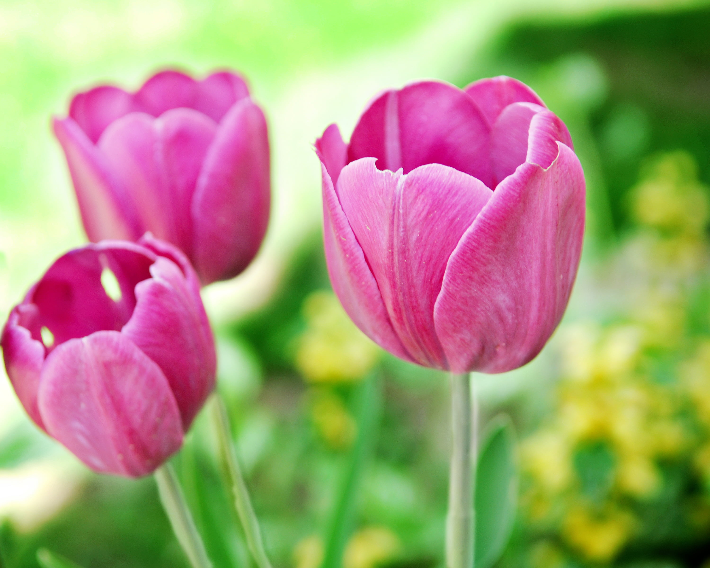

Tulip
Tulips are iconic spring-blooming flowers renowned for their vibrant colors and elegant, cup-shaped blooms. Here's a comprehensive guide on lilies, including their types, planting procedure, and care.
Types of Tulip:
- Single Early Tulips: These tulips are among the earliest to bloom in spring and feature single flowers on sturdy stems.
- Double Early Tulips: Double early tulips have fully double flowers with multiple layers of petals and bloom early in the spring.
- Triumph Tulips: Triumph tulips are known for their large, single flowers and strong stems. They bloom mid-spring and come in a wide range of colors.
- Darwin Hybrid Tulips: Darwin hybrid tulips are prized for their large flowers and sturdy stems. They bloom mid- to late spring and come in a variety of colors.
- Parrot Tulips: Parrot tulips have unique, fringed petals with ruffled edges, giving them a distinctive appearance. They bloom mid- to late spring and come in vibrant colors.
- Fringed Tulips: Fringed tulips have delicate, fringed edges on their petals, adding an extra touch of elegance to the blooms. They bloom mid- to late spring and come in various colors.
- Planting Procedure:
- Fall Planting: The best time to plant tulip bulbs is in the fall, ideally 6 to 8 weeks before the first frost date in your area. This allows the bulbs to establish roots before winter.
- Sunlight: Tulips prefer full sun to partial shade, with at least 6 hours of direct sunlight per day.
- Soil: Choose well-draining soil with a pH between 6.0 and 7.0. Sandy or loamy soils are ideal for tulips.
Weather in Kathmandu
Temperature: °C
Humidity: %
Condition:
Date & Time: